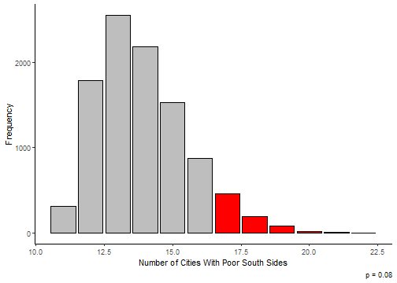

A River Runs Through It:
The Geography of Income Segregation
Question
- Why, anecdotally, does it seem like “the south side” often contains the poorest neighborhoods of a city?
–
- Is this true generally in the United States?
–
- If so, why??
–
Could it have something to do with geographic features?
People prefer not to be downstream / downwind of manufacturing?
If so, we’d expect the poor side of town to frequently line up with the direction of flow of the city’s river.
Data Collection

Data Collection
In the 50 largest cities in the United States, here’s the neighborhood geometry breakdown:
–
.pull-left[
| Num. Cities | % | |
|---|---|---|
| west | 4 | 8 |
| center | 8 | 16 |
| north | 10 | 20 |
| east | 11 | 22 |
| south | 17 | 34 |
]
.pull-right[ South Side: Los Angeles, Chicago, Phoenix, San Antonio, San Diego, Dallas, Columbus, Boston, Detroit, Baltimore, Albuquerque, Fresno, Tucson, Atlanta, Colorado Springs, Virginia Beach, Long Beach
North Side: New York, Philadelphia, San Jose, Charlotte, Denver, Nashville, Portland, Milwaukee, Miami, Tulsa
East Side: Houston, Austin, Fort Worth, San Francisco, Seattle, Washington, Kansas City, Omaha, Raleigh, Bakersfield, Arlington
West Side: Jacksonville, Louisville, Memphis, Oakland
]
Data Analysis
How weird is it that there are only 4 cities with poor west sides, but 17 cities with poor south sides?
–
This is where probability and statistics comes in handy.
- Is this a pattern you wouldn’t expect to observe by chance alone?
–
So we create a thought experiment:
–
Repeat that 42 times (one for each city with an obvious geographic divide):
–
east south west north
9 10 10 13 Data Analysis
If you repeat that exercise over and over, generating 10,000 sets of 42 randomly generated cities, how often are there only four cities with poor west sides?
Data Analysis
And what’s the chance that you at least 17 cities with poor south sides?

Data Collection: River Flow

Data Analysis: River Flow
- Are poor neighborhoods more likely to be downriver? We can use similar statistical methods to answer this question.
–
To be extra generous to the hypothesis, if a river flows “southwest”, I’ll count both the south and west of the city as being downriver.
- This means there’s a roughly 3/8 chance that river flow and neighborhood orientation line up.
–
Here are the actual results (out of 39 cities with major rivers flowing through them):
| Downriver? | Num. Cities |
|---|---|
| no | 20 |
| yes | 19 |
–
I leave the full statistical analysis as an exercise to the reader.
Conclusion
As best I can tell, the poor side of US cities is most likely to be the south side, but not more likely than chance alone would suggest.
- More data and more careful measurement could resolve the question more definitively.
–
- There is no clear tendency for the poor side of a city to be downriver.
–
- There is some interesting evidence that cities in England are more likely to have poor east sides, perhaps due to the direction of prevailing winds.